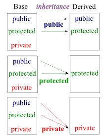

Virtual Functions - 2014

The code below shows only public members are accessible from outside of the class:
class A
{
public:
int xPublic;
protected:
int xProtected;
private:
int xPrivate;
};
class B : public A
{};
int main(int argc, char** argv)
{
A a;
a.xPublic = 0;
a.xProtected = 0; // error: inaccessible
a.xPrivate = 0; // error: inaccessible
B b;
b.xPublic = 0;
b.xProtected = 0; // error: inaccessible
b.xPrivate = 0; // error: inaccessible
return 0;
}
The following code shows that the inherited member is accessible within the class. But still even the inherited member accessing outside a class is not allowed (b.xProtected) because the same rule applies to the inherited member: protected member cannot be accessed from outside of a class (inherited member of a parent class remains as a protected member of a child class).
class A
{
public:
int xPublic;
protected:
int xProtected;
private:
int xPrivate;
};
class B : public A
{
public:
void foo(A *a, B *b)
{
a->xProtected = 0.0; // error: A::xProtected inaccessible
b->xProtected = 0.0; // OK: inherited member
this->xProtected = 0.0;
}
}
int main(int argc, char** argv)
{
A a;
B b;
b.xProtected = 0.0; // error: inaccessible outside of a class - inherited xProtected
b.foo(&a;, &b;);
return 0;
}
(Note) Non-static protected members of a base class can not be accessed via a pointer or reference to the base class.
The accessibility property of the introduced foo() method from the A type is private in the C type, hence it will not be publicly accessible. This is the case regardless of the fact that the A type is publicly derived and the foo method has public accessibility in A type. The alias created by the using declaration has the usual accessibility for a member declaration.
#include <iostream>
class A
{
public:
void foo() const { std::cout << "A"; }
};
class B
{
public:
void foo() const { std::cout << "B"; }
};
class C : public A, public B
{
using A::foo;
};
int main()
{
B b;
b.foo(); // OK: B::foo()
C c;
c.foo(); // error: A::foo() or private member in class 'C'
return 0;
}
When we talk about virtual function or virtual method, it's always in the context of inheritance and polymorphism. It is a function or method whose behavior can be overridden within an inheriting class by a function with the same signature. In other words, the purpose of virtual functions is to allow customization of derived class implementations.
A virtual method is a method whose implementation is determined at runtime based on the actual type of the invoking object. It needs to be declared with the virtual keyword, and the nonvirtual method is the default.
In other words, defining in a base class a virtual function that has another version in a derived class signals to the compiler, "We don't want static binding for this function. What we do want is the selection of the function to be called at any given point in the program based on the kind of object for which is called."
The implication of this: "The virtual call is resolved at runtime because the object cannot know whether it belongs to the class the member function is in, or some class derived from it."
Let's look at our simple examples.
#include <iostream>
class A {
public:
void f() {
std::cout << "A::f()" << std::endl;
}
};
class B: public A {
public:
void f() {
std::cout << "B::f()" << std::endl;
}
};
class C: public B {
public:
void f() {
std::cout << "C::f()" << std::endl;
}
};
class D: public C {
public:
// No f()
};
int main()
{
A *a = new A();
B *b = new B();
C *c = new C();
D *d = new D();
a->f(); // A::f()
b->f(); // B::f()
c->f(); // C::f()
d->f(); // C::f()
((B *)c)->f(); // B::f()
((A *)c)->f(); // A::f()
((A *)b)->f(); // A::f()
return 0;
}
Because f() is declared as nonvirtual, the invoked method depends on the type used at compile time. So, the invoked method is the method of the pointer type:
((B *)c)->f();
c is a type of B, so it invokes the method of Class B and so on. Also, note that in the call
d->f(); // C::f()inherited C::f() is used because no f() was defined in the class D.
#include <iostream>
using namespace std;
class Base
{
public:
char* name;
// virtual
void display() {
cout << name << endl;
}
};
class Derived: public Base
{
public:
char* name;
void display() {
cout << name << ", " << Base::name << endl;
}
};
int main()
{
Derived d;
d.name = "Derived Class";
d.Base::name = "Base Class";
Derived* dptr = &d;
// standard conversion from Derived* to Base*
Base* bptr = dptr;
// call Base::display()
// output: "Base Class"
bptr->display();
return 0;
}
If we redeclare f() as virtual in the base class A as the code below:
#include <iostream>
class A {
public:
virtual void f() {
std::cout << "A::f()" << std::endl;
}
};
class B: public A {
public:
void f() {
std::cout << "B::f()" << std::endl;
}
};
class C: public B {
public:
void f() {
std::cout << "C::f()" << std::endl;
}
};
int main()
{
A *a = new A();
B *b = new B();
C *c = new C();
a->f(); // A::f()
b->f(); // B::f()
c->f(); // C::f()
((B *)c)->f(); // C::f()
((A *)c)->f(); // C::f()
((A *)b)->f(); // B::f()
return 0;
}
then, the method invoked when we run is the method of the actual object
((B *)c)->f();
Here, because c is object type of Class C, it calls the f() in Class C, C::f().
class Base {
public:
void f();
virtual void vf();
};
class Derived : public Base {
public:
void f();
void vf();
};
#include <iostream>
using namespace std;
void Base::f() {
cout << "Base f()" << endl;
}
void Base::vf() {
cout << "Base vf()" << endl;
}
void Derived::f() {
cout << "Derived f()" << endl;
}
void Derived::vf() {
cout << "Derived vf()" << endl;
}
int main()
{
Base b1;
Derived d1;
b1.f();
b1.vf();
d1.f();
d1.vf();
Derived d2; // Derived object
Base* bp = &d2; // Base pointer to Derived object
bp->f(); // Base f()
bp->vf(); // which vf()?
return 0;
}
The output of the run is:
Base f() Base vf() Derived f() Derived vf() Base f() Derived vf()
The pointer (or reference) type is known at compile time while object type might be determined at runtime. Interpreting a function call in the source code as executing a particular block of function code is called binding the function name.
Binding that takes place during compile time is static binding or early binding. With the virtual function, the binding task is more difficult. The decision of which function to use can't be made at compile time because the compiler doesn't know which object the user is going to choose to make.
So, the compiler has to generate code that allows the correct virtual method to be selected as the code runs. This is dynamic binding or late binding.
In other words, when a request (message) is sent to an object, the particular operation that's performed depends on both the request and receiving object. Different objects that support identical request may have different implementation of the operations that fulfill these requests. The run-time association of a request to an object and one of its operations is known as dynamic binding. This means that issuing a request doesn't commit us to a particular implementation until run-time. So, we can write programs that expect an object with a particular interface, knowing that any object that has the correct interface will accept the request.
Let's look at the output we got.
Other results are as we expected. But the last one is the one that we want to talk more.
If vf() is not declared as virtual in the base class, bp->vf() goes by the pointer type (Base *) and invokes Base::vf().
The pointer type is known at compile time as we discussed above, so the compiler can bind vf() to Base::vf() at compile time. In other words, the compiler uses static binding for nonvirtual method.
However, if vf() is declared as virtual in the base class, bp->vf() goes by the object type, here, Derived and invokes Derived::vf().
In this example, we can see that the object type is Derived, however, there are cases the object type can only be determined at runtime. So, the compiler generated code that binds vf() to Base::vf() or Derived::vf(), depending on the object type at runtime.
In other words, the compiler uses dynamic binding for virtual methods.
In our example, vf() is virtual and the object type is Derived. So, it calls vf() in the Derived class.
Here is a summary for the virtual methods.
- A virtual method in a base class makes the function virtual in all classes derived from the base class.
- If a virtual method is invoked by using a reference to an object or by using a pointer to an object, the code uses the method defined for the object type rather than the method defined for the reference or pointer type. This is dynamic binding or late binding.
This behavior is important since it's always valid for a base-class pointer or reference to refer to an object of a derived type. - If we're defining a class that will be used as a base class, we should declare as virtual functions the class methods that may have to be redefined in derived classes.
- The run-time selection is the primary advantage of virtual method.
- The disadvantages are that it takes longer to invoke a virtual method and that extra memory is required to store the information needed for the lookup. Virtual function calls must be resolved at run time by performing a vtable lookup, whereas non-virtual function calls can be resolved at compile time. This can make virtual function calls slower than non-virtual calls. In reality, this overhead may be negligible, particularly if our function does non-trivial work or if it is not called frequently. The use of virtual functions increases the size of an object, typically by the size of a pointer to the vtable. This may be an issue if we wish to create a small object that requires a very large number of instances. In reality, this will likely be insignificant when compared to the amount of memory consumed by our various member variables.
- Adding, reordering, or removing a virtual function will break binary compatibility. This is because a virtual function call is typically represented as an integer offset into the vtable for the class. So, changing its order or causing the order of any other virtual functions to change means that existing code will need to be recompiled to ensue that it still calls the right functions.
- A class with no virtual functions tends to be more robust and requires less maintenance that one with virtual functions.
Let's guess the output from the following example. Note that the virtual key word is commented out.
#include <iostream>
class Base
{
public:
void f() {std::cout << "Base::f()\n";}
// virtual
void vf(){std::cout << "Base::vf()\n";};
};
class Derived: public Base
{
public:
void f() {std::cout <<"Derived::f()\n";}
void vf(){std::cout <<"Derived::vf()\n";};
};
int main()
{
Base b;
Base *pb = &b;
Derived d;
Derived *pd = &d;
Base *pbd = &d;
b.f();
d.f();
pb->f();
pd->f();
pbd->f();
pbd->vf();
return 0;
}
Output is:
Base::f() Derived::f() Base::f() Derived::f() Base::f() Base::vf()
However, if we put the virtual back, the output is different.
...
class Base
{
public:
void f() {std::cout << "Base::f()\n";}
virtual
void vf(){std::cout << "Base::vf()\n";};
};
...
Our new output is:
Base::f() Derived::f() Base::f() Derived::f() Base::f() Derived::vf()
The following sample may not be obvious regarding which method it is calling:
#include <iostream>
#include <vector>
using namespace std;
class A
{
public:
A(int n = 0) : m(n) {}
public:
virtual int getVal() const {
cout << "A::getVal() = ";
return m;
}
virtual ~A() { }
protected:
int m;
};
class B : public A
{
public:
B(int n = 0) : A(n) {}
public:
int getVal() const {
cout << "B::getVal() = ";
return m + 1;
}
};
int main()
{
const A a(1);
const B b(3);
const A *pA[2] = { &a;, &b; };
cout << pA[0]->getVal() << endl;
cout << pA[1]->getVal() << endl;
vector<A> vA;
vA.push_back(a);
vA.push_back(b);
vector<A>::const_iterator it = vA.begin();
cout << it->getVal() << endl;
cout << (it + 1)->getVal() << endl;
return 0;
}
Output should look like this:
A::getVal() = 1 B::getVal() = 4 A::getVal() = 1 A::getVal() = 3
So, actually, the 3rd and 4th calls are the same as the following:
cout << vA[0].getVal() << endl;
cout << vA[1].getVal() << endl;
In the code below, the method B::foo is called but with the default argument of 99 from A::foo. A virtual function call uses the default arguments in the declaration of the virtual function determined by the static type of the pointer or reference denoting the object. An overriding function in a derived class does not acquire default arguments from the function it overrides. So, the a->foo() gets the parameter from A::foo(int x = 99) but not from B::foo(x = 77).
#include <iostream>
struct A
{
virtual int foo(int x = 99)
{
return x;
}
};
struct B : public A
{
int foo(int x = 77)
{
return x;
}
};
int main(int argc, char** argv)
{
A* a = new B;
std::cout << a->foo() << std::endl; // output 99
return 0;
}
Virtual destructor should be defined for a class to ensure that the proper destructor is called if a class is derived from it. An object of the derived class is deallocated using object expression in which the static type refers to the base class.
If a class to be used as a base class, the destructor should be virtual. If a class does not contain virtual functions, that often tells it is not meant to be used as a base class.
Calling a method with an object pointer always invokes:
- The most derived class function, if a method is virtual.
- The function implementation corresponding to the object pointer type (used to call the method), if a method is not virtual.
A virtual destructor works in the same way. A destructor gets called when an object goes out of scope or when we call delete on an object pointer (reference).
When any derived class object goes out of scope, the destructor of that derived class gets called first. It then calls its parent class destructor so memory allocated to the object is properly released.
But, if we call delete on a base pointer which points to a derived class object, the base class destructor get called first for non-virtual function.
The rule of thumb - if we have a class with a virtual function, it needs a virtual destructor. Why?
- If a class has a virtual function, it is likely to be used as a base class.
- If it is a base class, its derived class is likely to be allocated using new.
- If a derived class object is allocated using new and manipulated through a pointer to its base, it is likely to be deleted via a pointer to its base.
Let's look at the example below.
#include <iostream>
using namespace std;
class Base
{
public:
Base() {
cout << "Base Constructor \n" ;
}
~Base() {
cout << "Base Destructor \n" ;
}
};
class Derived : public Base
{
public:
Derived(string s):str(s) {
cout << "Derived Constructor \n" ;
}
~Derived() {
cout << "Derived Destructor \n" ;
}
private:
string str;
};
int main()
{
Base *pB = new Derived("derived");
delete pB;
}
Output from the run is:
Base Constructor Derived Constructor (Derived Destructor)- Not called Base Destructor
As we see from the output, deleting a base pointer only calls destructor for the base class not the destructor for the derived class.
Base *pB = new Derived(); delete pB;
In the code, pB is a pointer to a base class with non-virtual destructor, and we are trying to delete a derived class object through a base class pointer. The results are undefined. What happens at runtime is that the derived parts of the object never destroyed. But the base class part typically would be destroyed. So, it has a weird object which is partially destroyed.
However, if we declare the vase class destructor as virtual, this makes all the derived class destructors virtual as well.
Let's replace the above destructor:
~Base() {
cout << "Base Destructor \n" ;
}
with this:
virtual ~Base() {
cout << "Base Destructor \n" ;
}
Then, the output becomes:
Base Constructor Derived Constructor Derived Destructor Base Destructor
#include <iostream>
using namespace std;
class Base{
protected:
int myInt;
public:
Base(int n):myInt(n){
cout << "Base Ctor\n";
}
virtual void print() const = 0;
virtual ~Base(){
cout << "Base Dtor" << endl;
}
};
class Derived: public Base {
public:
Derived(int n = 0):Base(n) {
str = new char[100];
myInt = n;
cout << "Derived Ctor myInt" << endl;
}
void print()const{
cout << "Derived print(): myInt = "<< myInt << endl;
}
~Derived(){
cout << "Derived Dtor" << endl;
delete [] str;
}
private:
char *str;
};
int main()
{
Base *pB = new Derived(2010);
pB->print();
delete pB;
return 0;
}
In the example above, the Derived class has a char * member str that points to memory allocated by new.
str = new char[100];
Then, when a Derived object expires or we call delete on the pointer to the Derived object, it's critical that the ~Derived destructor be called to free that memory.
Derived::~Derived(){
delete [] str;
}
The output from the run:
Base Ctor Derived Ctor myInt Derived print(): myInt = 2010 Derived Dtor Base Dtor
Look at the line of code below
delete pB;
If the default static binding applies, the delete invokes the Base destructor, ~Base().
This frees memory pointed to by the Base component of the Derived object but not memory pointed to by the new class members.
However, if the destructors are virtual, the same code invokes the ~Derived() destructor, which frees memory pointed to by the Derived component, and then calls the ~Base() destructor to free memory pointed to by the Base component.
So, using virtual destructors ensures that the correct sequence of destructors is called.
Now, let's look at the following example, and figure out what's happening.
#include <iostream>
#include <string>
using namespace std;
struct a
{
~a( ) { cout << "~a()" << endl;}
};
struct b : public a
{
~b( )
{
cout << "~b() throw 1" << endl;
throw 1;
};
};
bool c( ) {
a* d=new b; //base pointer pointing to derived object
try {
delete d; // deleteing derived class
}
catch( int e ) {
cout << "catch e" << endl;
return e;
}
return false;
}
int main()
{
c();
return 0;
}
The output from the run is simple, and we know why.
~a()
As a quick summary, here is probably the simplest example for virtual destructor of a base class.
Q: Why is the keyword "virtual" added before the person destructor?
class Person
{
public:
Person();
virtual ~Person();
};
class Blogger: public Person
{
public:
Blogger();
~Blogger();
};
Answer: To ensure that the proper destructor is called if this class is derived from and an object of the derived class is deallocated using object expression in which the static type refers to the base class.
Constructors can't be virtual!
"Creating a derived object invokes a derived class constructor, not a base class constructor. The derived class constructor then uses a base class constructor, but the sequence is distinct from the inheritance mechanism. Therefore, a derived class doesn't inherit the base class constructors, so usually there's not much point to making them virtual, anyway." - from C++ Primer, 5th ed.
When constructing an object, we must specify the name of a concrete class that is known at compile time. For instance,
MyClass *obj = new MyClass();
Here, MyClass is a specific type that must be known by the compiler. There is no binding at run time for constructors in C++.
Again, we cannot declare a virtual constructor in C++. We must specify the exact type of the object to be constructed at compile time. The compiler therefore allocates the memory for that specific type and then calls the default constructor for any base classes unless we explicitly specify a non-default constructor in the initialization list. It then calls the constructor for the specific type itself. This is also why we cannot call virtual methods from the constructor and expect them to call the derived override because the derived class hasn't been initialized yet.
Confused?
Then, let's take a step back, and think about what the constructor is doing regarding virtual something.
Also, we need to know the order of calling constructor to understand the virtual constructor: the constructors are called in order, starting from base class to the more derived class. It must also call member-object constructors along the way.
The following lines are mostly from Bruce Eckel's "Thinking in C++."
If we call a virtual function inside our constructor, only the local version of the function is used. In other words, the virtual mechanism doesn't work within the constructor.
What's the constructor's job?
It is to bring the object into existence. Inside any constructor, the object may
only be partially formed - the only thing for sure is that the base class
objects have been initialized, but we do not have any info regarding class hierarchy.
A virtual function call, however, try to reach down the inheritance hierarchy.
It may call a function in a derived class. If we could do this inside a constructor,
we'd be calling a function that might touch members that had not been initialized yet, which may cause some unexpected outcome.
When a constructor is called, one of the first things it does is initialize its pointer in the vtable.
However, the constructor does not know whether or not the object is in the base class or other derived classes. When the compiler creates a code for that constructor, it creates a code for a constructor of that class, not for a base class or not for a class derived from it. So the pointer in the vtable it uses must be for the vtable of that class. The pointer remains initialized to that vtable for the rest of the object's lifetime unless this isn't the last constructor call. If a more-derived constructor is called afterwards, that constructor resets the pointer to its vtable, and so forth, until the last constructor finishes. The state of the pointer is determined by the constructor that is called last.
Every constructor is setting the pointer to its own vtable. If it uses the virtual mechanism for function calls, it will produce only a call through its own vtable, not the most-derived vtable.
In summary, unlike destructor, constructor works downward in the class hierarchy: base class to more derived class. Each vtable is for that class only. There is no way to make the virtual mechanism working within the constructor.
Deleting NULL pointers has no effect. Deleting a pointer to a base class which points to a derived object is legal assuming the base destructor is virtual. However, deleting an array of derived objects using a base class pointer is undefined. So, it's unsafe!
struct Foo
{
virtual ~Foo() {}
};
struct Bar : public Foo {};
int main()
{
Foo* f = new Bar;
delete f;
f = 0;
delete f;
Foo* fa = new Bar[10];
delete [] fa;
fa = 0;
delete fa;
return 0;
}
Why?
There have been quite a few discussions on this issue. Here is one of the threads on the issue. Base pointer to array of derived objects.
The pure virtual functions are essential to creating abstract classes. They give us a way to declare functions that offer no implementations.
As we recall from previous sections that the keyword virtual allows a function call to connect with appropriate implementation, even when a reference to a parent class is used to make the call. The compiler calls a virtual function indirectly through a function pointer stored in the object.
If we change the virtual function in the Base class:
virtual void vf();
to:
virtual void vf() = 0;
the vf() becomes a pure virtual function.
Suddenly, the Base class becomes an abstract class. Its pure virtual function, vf() marks it as such.
As a result, clients cannot create instances of the Base class, only of classes derived from it.
Putting a pure virtual function in our class tells other programmers two things about the class:
- They cannot instantiate an object of this class - they should create a child class from it.
- They must override all pure virtual functions in the child class, or they will not be able to instantiate the child class.
Here is a little summary for the purpose of virtual functions from Effective C++ by Scott Meyers.
- The purpose of declaring a pure virtual function is to have derived classes inherit a function interface only.
- On the other hands, the purpose of declaring a simple virtual function is to have derived classes inherit a function interface as well as a default implementation.
- The purpose of declaring a non-virtual function is to have derived classes inherit a function interface as well as a mandatory implementation.
- We must provide a function body for the pure virtual destructor.
While pure virtual destructors are legal in Standard C++, there is an added constraint when using them:
we must provide a function body for the pure virtual destructor.
This seems counterintuitive; how can a virtual function be pure if it needs a function body?
But if we keep in mind that constructors and destructors are special operations, it makes more sense, especially if we remember that all destructors in a class hierarchy are always called. If we do not provide the definition for a pure virtual destructor, what function body would be called during destruction?
Thus, it's absolutely necessary that the compiler and linker enforce the existence of a function body for a pure virtual destructor.//Interface.h class Interface { public: //pure virtual destructor declaration virtual ~Interface() = 0; };Then, somewhere outside the class declaration, the pure virtual destructor has to be defined like this:
//Interface.cpp file //definition of a pure virtual destructor; should always be empty Interface::~Interface() {} - What's the value of it?
If it's pure, but it has to have a function body, what's the value of it?
The only difference you'll see between the pure and non-pure virtual destructor is that the pure virtual destructor does cause the base class to be abstract, so you cannot create an object of the base class. - Difference between a regular virtual destructor and a pure virtual destructor.
So what's the difference between a regular virtual destructor and a pure virtual destructor?
The only distinction occurs when you have a class that only has a single pure virtual function: the destructor. In this case, the only effect of the purity of the destructor is to prevent the instantiation of the base class.
If there were any other pure virtual functions, they would prevent the instantiation of the base class, but if there are no others, then the pure virtual destructor will do it.
Using virtual functions has the following costs in memory and execution speed:
- Each object has its size increased by the amount needed to hold an address.
- For each class, the compiler creates a table of addresses of virtual functions.
- For each function call, there is an extra step of looking up the address on the table.
Virtual base classes allow an object derived from multiple bases to share a common base to inherit just one object of that shared base class.
#include <string>
using namespace std;
class Worker
{
public:
string name;
};
class Student: public virtual Worker
{
public:
int studentID;
};
class Assistant: virtual public Worker
{
public:
int employerID;
};
class StudentAssitant: public Student, public Assistant {};
Now a StudentAssitant object will contain a single copy of a
Here, the virtual key word does not have any obvious connection to the virtual in virtual functions.
How many times is "Base" printed by the program below?
#include <iostream>
using namespace std;
struct Base
{
Base() { cout << "Base" << endl; }
};
struct d1 : virtual public Base {d1(){cout << "d1" << endl;}};
struct d2 : virtual public Base {d2(){cout << "d2" << endl;}};
struct d3 : public Base {d3(){cout << "d3" << endl;}};
struct d4 : public Base {d4(){cout << "d4" << endl;}};
struct ddd : public d1, public d2, public d3, public d4 { };
int main(int argc, char** argv)
{
ddd d;
return 0;
}
3 times.
One time for the first virtual occurrences of Base in the hierarchy and once for each non-virtual occurrences of Base. d1 and d2 together have one. d3 and d4 each have one.
Output:
Base d1 d2 Base d3 Base d4
The following code won't compile because the ambiguity of method print() inherited:
#include <iostream>
struct Shape
{
virtual void print()
{
std::cout << "Shape" << std::endl;
}
virtual ~Shape() {}
};
struct Box : public virtual Shape
{
void print()
{
std::cout << "Box" << std::endl;
}
};
struct Sphere : public virtual Shape
{
void print()
{
std::cout << "Sphere" << std::endl;
}
};
struct BoxSphere : public Box, public Sphere
{};
int main(int argc, char** argv)
{
Shape* s = new BoxSphere;
s->print();
delete s;
return 0;
}
In this case, we may specify which print() we're using such as Box::print() or Sphere::print():
struct BoxSphere : public Box, public Sphere
{
public:
void print() { Sphere::print(); Box::print();}
};
Let's look at the following example:
#include <iostream>
using namespace std;
class Base
{
public:
virtual void MethodA() {
cout << "Base::void MethodA()" << endl;
}
virtual void MethodA(int a) {
cout << "Base::void MethodA(int a)" << endl;
}
};
class Derived : public Base
{
public:
virtual void MethodA() {
cout << "Derived::void MethodA()" << endl;
}
};
int main()
{
Derived d;
d.MethodA();
d.MethodA(4);
return 0;
}
We may get a compiler error something like this:
'Derived::MethodA' : function does not take 1 arguments
Even though we may not get the error, however, the code has the following implications:
Derived d; d.MethodA(); // OK d.MethodA(4); // Not OK
The new definition defines a MethodA() that takes no arguments. Rather than resulting in two overloaded version of the function, this redefinition hides the base class version that takes an int argument. In other words, redefining inherited methods is not a variation of overloading. If we redefine a function in a derived class, it doesn't just override the base class declaration with the same function signature. It hides all base-class methods of the same name, regardless of the argument signature.
So, if the base class declaration is overloaded, we need to redefine all the base-class versions in the derived class as in the modified code below:
#include <iostream>
using namespace std;
class Base
{
public:
virtual void MethodA() {
cout << "Base::void MethodA()" << endl;
}
virtual void MethodA(int a) {
cout << "Base::void MethodA(int a)" << endl;
}
};
class Derived : public Base
{
public:
virtual void MethodA() {
cout << "Derived::void MethodA()" << endl;
}
virtual void MethodA(int a) {
cout << "Derived::void MethodA(int a)" << endl;
}
};
int main()
{
Derived d;
d.MethodA();
d.MethodA(4);
return 0;
}
Now, we have an output:
Derived::void MethodA() Derived::void MethodA(int a)
If we redefine just one version, the other one become hidden and cannot be used by objects of the derived class.
This is not related to virtual but it's worth mentioning. Let's look at the following code:
int x = 7;
int main()
{
cout << x;
int x = x;
return 0;
}
When we print out x, it will give us a right value 7, however, at the line int x = x, it won't be executed properly because we are trying to initialize x with unknown x. Actually, at the moment of defining x, it hides the global x, and we no longer sees it.
So, this one wont't work either:
int x = 7;
int main()
{
cout << x;
int x; // declaration is fine until we actually try to use it
cout << x; // Not OK because x not initialized
return 0;
}
The following code is fine. We just declare a new array x with the size of global variable x:
const int x = 7;
int main()
{
cout << x;
int x[x];
int sz = sizeof(x)/sizeof(x[0]);
return 0;
}
Ph.D. / Golden Gate Ave, San Francisco / Seoul National Univ / Carnegie Mellon / UC Berkeley / DevOps / Deep Learning / Visualization